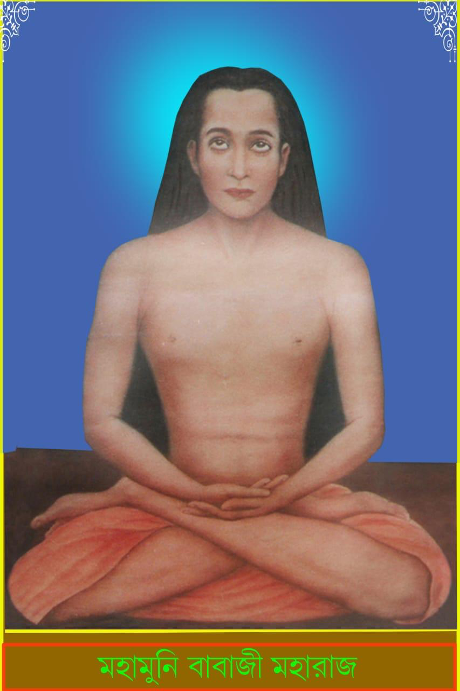
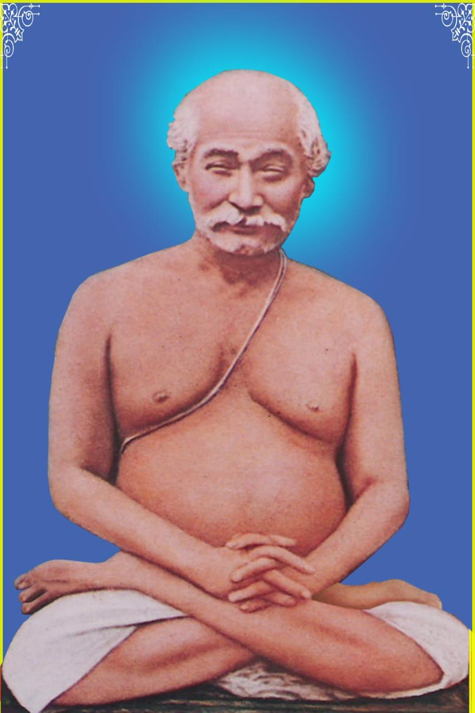
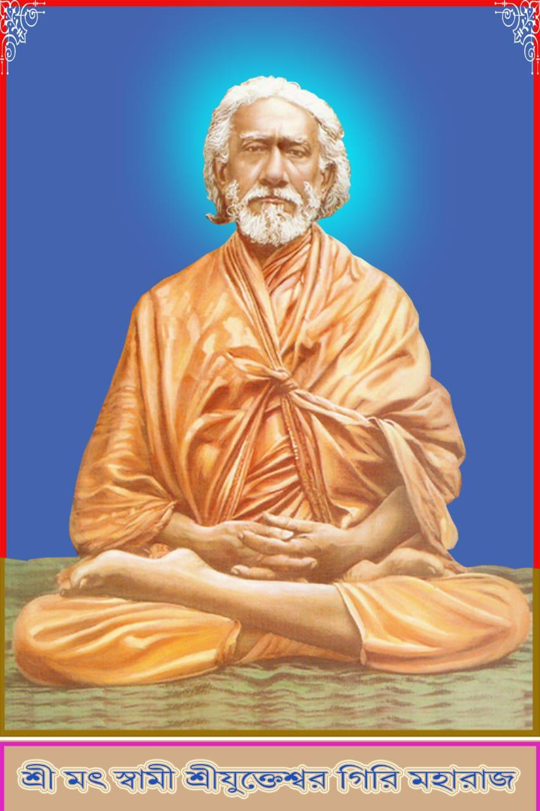
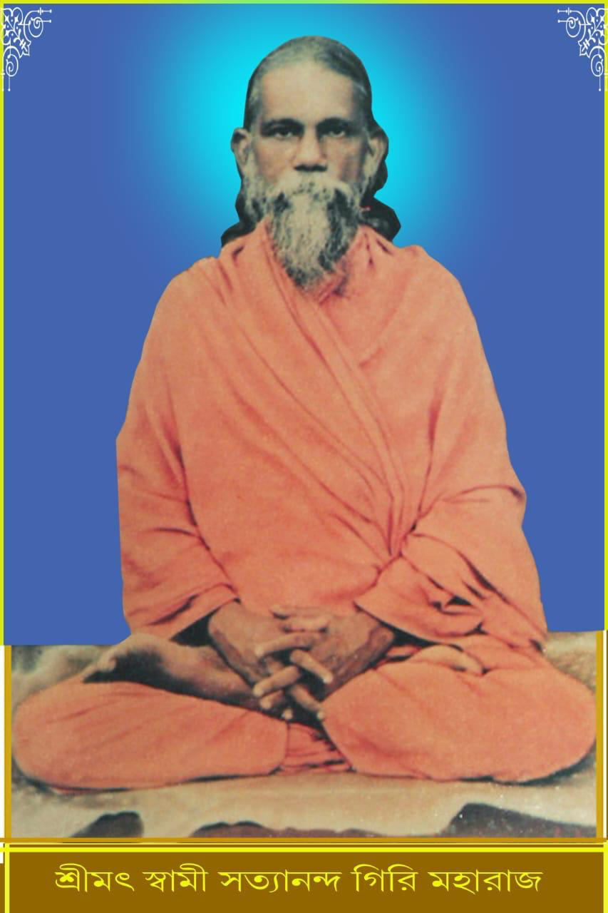
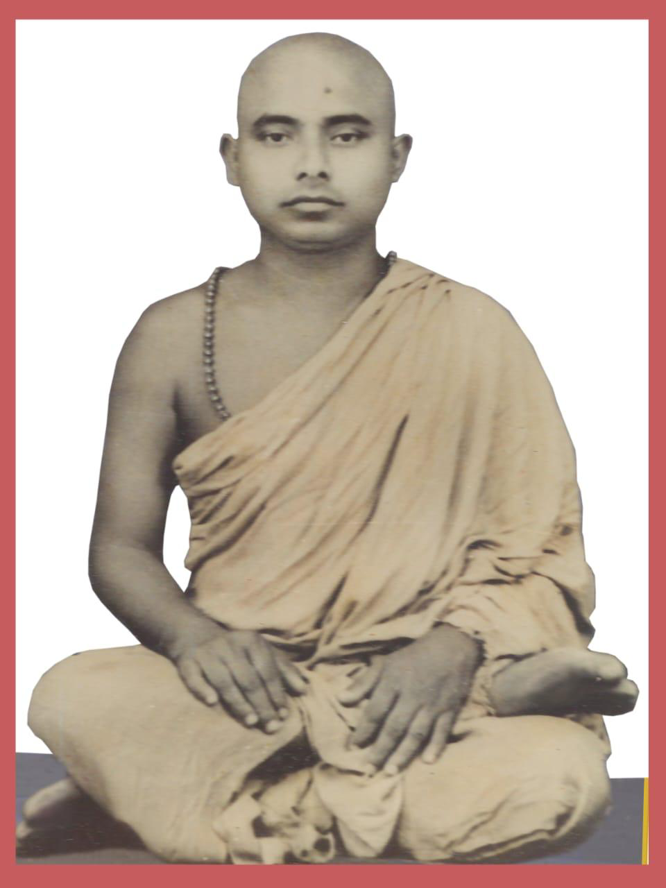
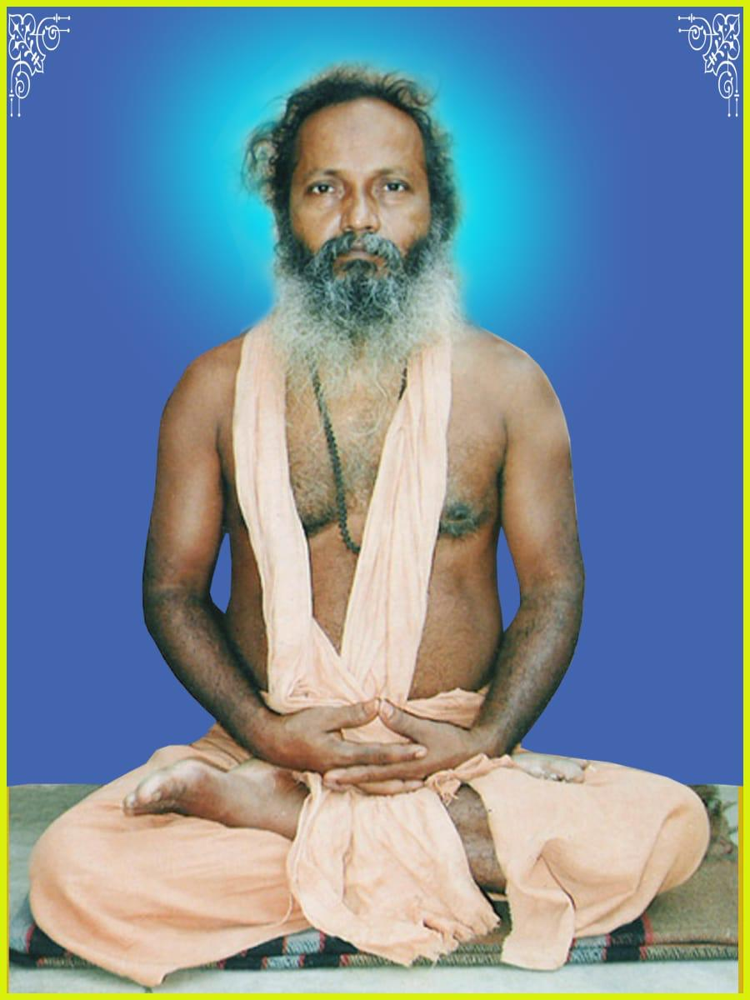

The Kriya Yoga Guru Lineage
A distinguished lineage of self-realized masters who propagated the ancient science of Kriya Yoga from the Himalayas to the world.
About Brahmarshi Satyananda Sannyas Ashram
The Brahmarshi Satyananda Sannyas Ashram, through the Gita Prachar Mandali, is dedicated to spreading the profound science of Kriya Yoga to the general public. Just as one cannot truly know the taste of a sweet without eating it, one must practice Kriya Yoga to genuinely understand its transformative power. Our ashram carries forward the pure lineage of the Gurus, offering authentic spiritual education and a haven for seekers of truth.
The Sacred Lineage of Masters
From the immortal Babaji Maharaj to the present-day masters, the flame of Kriya Yoga has been passed down through an unbroken chain of enlightened Gurus.

Immortal (approx. 600 years)Kalpayogi Sri Sri Babaji Maharaj
Babaji Maharaj is a supremely liberated (paramukta) yogi who has retained his physical form in the Himalayas for approximately 600 years. He takes various forms at will and can only be seen if he wishes it. In the past, he initiated great masters like Adi Shankaracharya and Kabir Das.
Swami Sriyukteswar Giri described him as having a youthful, golden complexion with deep, dark eyes, looking identical to a younger Lahiri Mahasaya.

September 30, 1828 — September 26, 1895Yogiraj Sri Sri Lahiri Mahasaya
In 1861, in a Himalayan cave, Babaji Maharaj initiated Lahiri Mahasaya into the ancient science of Kriya Yoga. Babaji revealed that this was the exact same science Lord Krishna had imparted to Arjuna millennia ago. Lahiri Mahasaya was instructed to remain a householder so that ordinary people could have an accessible path to God-realization.
📍 Born: Ghurni, Bengal Presidency, British India

May 10, 1855 — March 9, 1936Swami Sriyukteswar Giri
Swami Sriyukteswar Giri noted that Kriya Yoga rapidly accelerates human evolution; just half a minute of Kriya practice equals one year of natural spiritual growth. Through this science, a yogi can achieve self-realization in a single lifetime, bypassing a million years of natural evolution.
📍 Born: Serampore, Bengal, British India

1896 — 1971Swami Satyanand Yogi
Swami Satyanand Yogi was a profound Kriya Yogi who continued the lineage of Swami Sriyukteswar Giri. He dedicated his life to the practice and propagation of Kriya Yoga, nurturing the next generation of disciples.

1934 — 1986Swami Jagadananda Giri Maharaj
Swami Jagadananda Giri Maharaj was a devoted disciple of Swami Satyanand Yogi. He faithfully carried the torch of Kriya Yoga teachings and served as a guiding light for seekers during his time.

Born: April 5, 1953Paramhansa Gyanananda
Paramhansa Gyanananda is a prominent figure in the Kriya Yoga lineage, continuing the sacred tradition as a disciple of Swami Jagadananda Giri Maharaj. He carries forward the mission of spreading Kriya Yoga in the modern era.
Key Spiritual Maxims
Profound aphorisms from the Kriya Yoga tradition to illuminate the path of every seeker.
"To be truly free, forget the world, forgive everyone, and harbor no malice toward anyone."
— Kriya Yoga Tradition"Fools argue, wise people discuss, and yogis remain silent and detached."
— Kriya Yoga Tradition"Continuously focus your thoughts on your spiritual goal; distracting thoughts will eventually vanish on their own."
— Kriya Yoga Tradition"Leave immediately if you are in a place where the Guru is being slandered."
— Kriya Yoga Tradition"God resides in every living body; serving them is serving God."
— Kriya Yoga Tradition